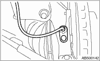
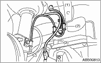

1. Temporarily install the front ABS wheel speed sensor on the housing.
CAUTION:
Be careful not to hit the ABS wheel speed sensor pole piece and tone wheel against adjacent metal parts during installation.

2. Install the front ABS wheel speed sensor on the strut and the wheel apron bracket.
Tightening torque:
33 N·m (3.4 kgf-m, 25 ft-lb)

|
(1) |
To the front ABS wheel speed sensor connector |
|
(2) |
Bracket |
|
(3) |
Front height sensor harness |
3. Attach the front height sensor harness clip to the bracket. (Models with HID, right side only)
4. Check the clearance of the sensor. 
If clearance is out of the standard value, readjust by using the spacer (Part No. 26755AA000).
ABS wheel speed sensor gap standard value:
0.3 — 0.8 mm (0.012 — 0.031 in)
Tightening torque:
33 N·m (3.4 kgf-m, 25 ft-lb)
NOTE:
Check the identification (mark) on the harness to make sure there is no warpage. (RH: Red, LH: Blue)
5. After confirmation of the ABS wheel speed sensor clearance, connect the connector to the ABS wheel speed sensor.
6. Connect the battery ground cable to battery.